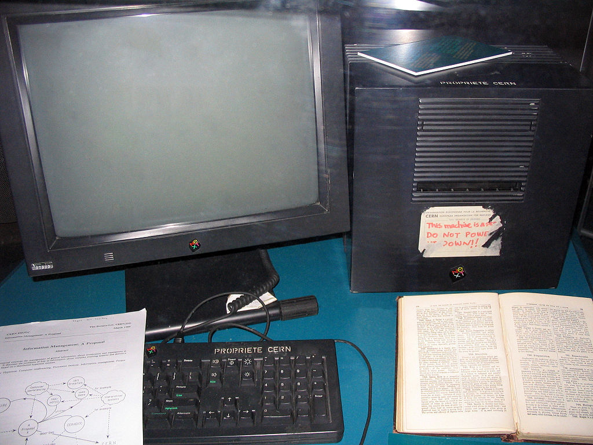

Tim Berners LEE
| His awards | Day | Month | Year | Link |
| Knighted | 16 | July | 2004 | Honor 1 |
| Finlandiya Milenyum Teknoloji Odulu | 15 | April | 2004 | Honor 2 |
| Internet Hall of Fame | 24 | April | 2012 | Honor 3 |
| A.M. Turing Award Winner | 4 | April | 2017 | Honor 4 |
TimBL, all named Sir Tim Berners-Lee was born 8 June 1955 (60 years old) in London, England.
He is one member of 4 childed family.
He went to Sheen Mount Primary School, then he went Emanuel School from 1963-1973.
He had studied University of Oxford(1973-76) and he get first-class degree in physics.
After the graduatioun, he started to being an engineer in a campany for 2 years from 1978.
After 2 years he joined CERN like an independent contractor for 7 months.
In CERN he made a Project what based on hypertext concepted, updating and sharing some informations for the reserchers.
He produced Enquire (a system prototype).
After leaving CERN, he started to a campany whitch gave him more knowledge about computer networking while he was working on
"real-time remote procedure call". 4 years later he returnet to CERN like a fellow.
In 5 years, CERN was the biggest node of the Internet in Europe. He noticed a chance to joining hypertext with the Internet.
"I just had to take the hypertext idea and connect it to the Transmission Control Protocol and domain name system ideas and ta-da! the World Wide Web."
First web Server